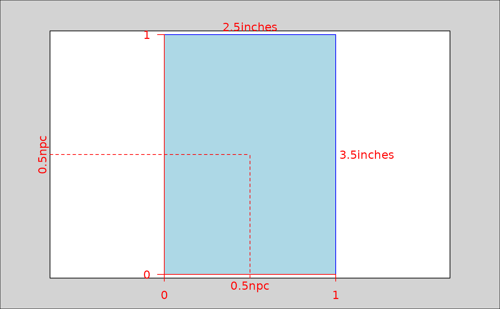

Convert a page data.frame to a viewport class object
Source: R/page_to_viewport.R
page_to_viewport.RdCreate a viewport class object with a width and height matching the
dimensions of a page data.frame and default.units that match the page units.
Usage
page_to_viewport(page, name = NULL, cols = c("width", "height"), ...)Arguments
- page
A page data.frame from
get_page_size()ormake_page_size().- name
A character value to uniquely identify the viewport once it has been pushed onto the viewport tree.
- cols
Column names to use for width and height columns. Defaults to c("width", "height"). Must be length 2 and the first value is always used as as the width name and the second as the height.
- ...
Arguments passed on to
grid::viewportxA numeric vector or unit object specifying x-location.
yA numeric vector or unit object specifying y-location.
justA string or numeric vector specifying the justification of the viewport relative to its (x, y) location. If there are two values, the first value specifies horizontal justification and the second value specifies vertical justification. Possible string values are:
"left","right","centre","center","bottom", and"top". For numeric values, 0 means left alignment and 1 means right alignment.gpAn object of class
"gpar", typically the output from a call to the functiongpar. This is basically a list of graphical parameter settings.clipOne of
"on","inherit", or"off", indicating whether to clip to the extent of this viewport, inherit the clipping region from the parent viewport, or turn clipping off altogether. For back-compatibility, a logical value ofTRUEcorresponds to"on"andFALSEcorresponds to"inherit".May also be a grob (or a gTree) that describes a clipping path or the result of a call to
as.path.maskOne of
"none"(orFALSE) or"inherit"(orTRUE) or a grob (or a gTree) or the result of call toas.mask. This specifies that the viewport should have no mask, or it should inherit the mask of its parent, or it should have its own mask, as described by the grob.xscaleA numeric vector of length two indicating the minimum and maximum on the x-scale. The limits may not be identical.
yscaleA numeric vector of length two indicating the minimum and maximum on the y-scale. The limits may not be identical.
angleA numeric value indicating the angle of rotation of the viewport. Positive values indicate the amount of rotation, in degrees, anticlockwise from the positive x-axis.
layoutA Grid layout object which splits the viewport into subregions.
layout.pos.rowA numeric vector giving the rows occupied by this viewport in its parent's layout.
layout.pos.colA numeric vector giving the columns occupied by this viewport in its parent's layout.
Examples
vp <- page_to_viewport(get_paper("Poker card"))
grid::grid.show.viewport(vp)
